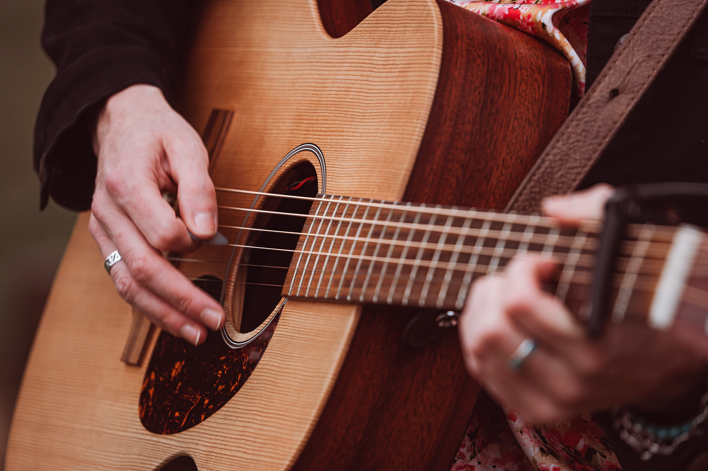

CONFIDENCE IN CREATIVITY
Find your rhythm. Trust yourself. Create with confidence.
Creativity is for everyone. Wherever you are in your creative journey or life, discover what becomes possible when you give yourself permission to explore.

Explore coaching Arrange a Sound CheckWhat could you do if you stopped holding yourself back?
Perhaps it's not your ability that's holding you back, but the doubts, expectations or fears that have grown around it.
Through creativity and supportive coaching, you can explore what's getting in your way, build self-trust and find the confidence to move forward.
A little more confidence, a little more freedom
I'm Charlotte, and I believe creativity is for everyone. You don't have to be an expert, feel completely ready or know exactly where you're heading.
Perhaps you're just starting out, rediscovering something you once loved, looking to overcome a creative block or simply wanting more confidence in yourself and everyday life.
Sometimes we hold ourselves back through self-doubt, overthinking or worrying about what other people think. Coaching gives you space to explore what's getting in your way, build self-trust and take manageable steps towards what matters to you.
Wherever you're starting from, this is about finding your own way, at your own pace, without pressure or judgement.
Creativity is about more than you think
Creativity isn't just about painting, singing, playing an instrument or making something beautiful. It's about curiosity, self-expression, seeing things differently and discovering new possibilities.
Build confidence
Become more comfortable trying new things, making mistakes and believing in your abilities.
Develop self-trust
Learn to value your own judgement, make decisions and feel more confident in your choices.
Express yourself
Feel freer to be yourself, worry less about other people's opinions and discover your own voice.
Explore new perspectives
Challenge limiting beliefs, become more open to possibilities and find different ways forward.
Rediscover enjoyment
Make room for curiosity, play, self-expression and the pleasure of trying something new.
Discover what's possible
Become more willing to take the next step and shape your life in a way that feels right for you.
How we can work together
There's no one-size-fits-all approach. Your journey is yours, and we'll start wherever you are.
One-to-one coaching
Explore what's holding you back, strengthen your self-trust and work towards a personal or creative goal that matters to you.
Confidence for Creativity
An eight-week coaching journey to help you move beyond self-doubt, build self-trust and explore your creativity. Shaped around your individual needs, experience and goals, with space to discover new possibilities and find your own way forward.
Creative workshops
Supportive, practical sessions to help you understand your confidence patterns, explore new perspectives and take your next step.
You don't have to have it all figured out.
Whether you're a complete beginner, an experienced creative or someone who has never really thought of themselves as creative, there's room to explore.
Perhaps you're feeling stuck, questioning yourself, worrying about what others think or wondering what comes next. Maybe you simply know you'd like something in your life to change.
You don't need a particular skill, a clear plan or all the answers. Through supportive coaching and creative exploration, you can begin to understand what's holding you back, build self-trust and discover new possibilities.
A Different Kind of Performance Support
Alcohol-Free Performance Coaching
For musicians and performers who want to explore greater confidence, clarity and self-trust, without relying on alcohol.
Whether you're curious about performing alcohol-free, rethinking your relationship with drinking or simply looking for a more sustainable way to feel good on stage and off it, coaching offers a supportive space to explore what works for you.
No judgement. No pressure. Just an opportunity to discover another way.
Ready to explore what's possible?
Wherever you are on your journey, let's have a friendly conversation about what matters to you.
No pressure. Just a chance to start a conversation.